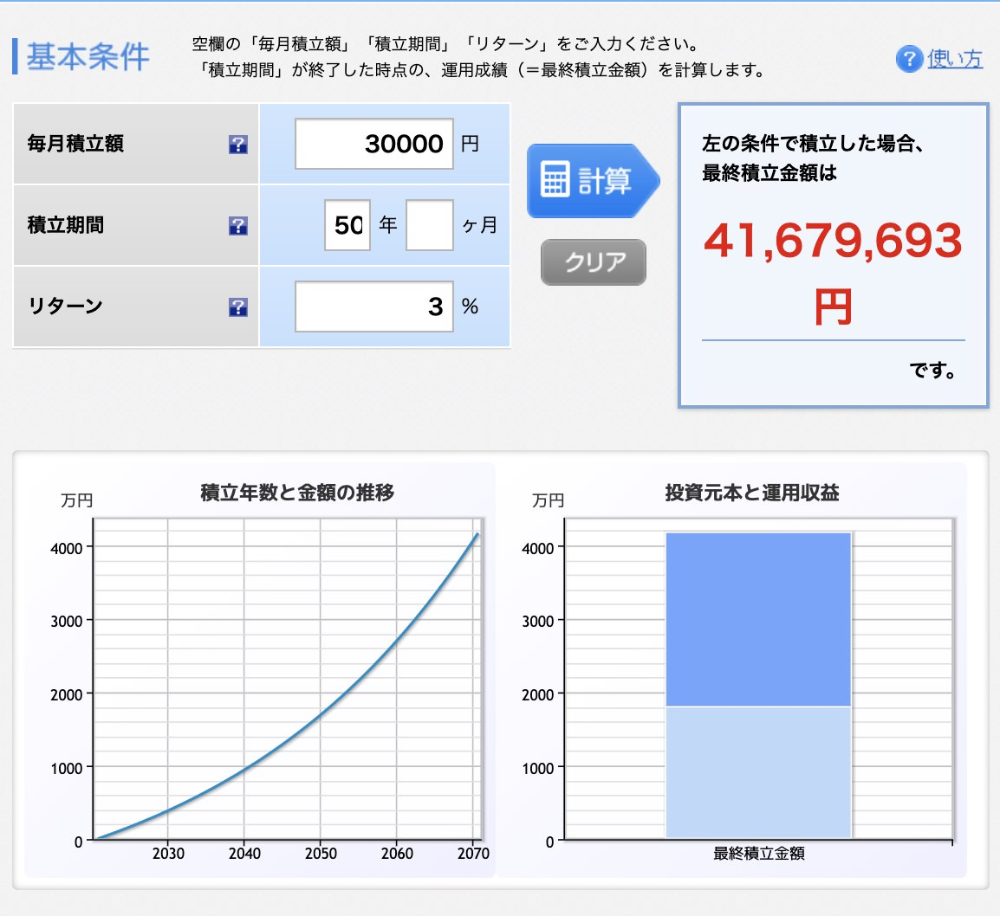

【完全初心者向け】お金持ちになる方法【７つある／再現性は低いです】
こんにちは、ゆーだいです。
30歳で、資産が2億になりました。
次は10億を目指し、頑張っています。
さて、先日に下記のツイートをしました。
✅お金持ちになる方法 ・会社を売却する ・会社を上場する ・事業をつくる ・スキルを学ぶ ・複利で投資する ・銀行で借金する ・ハイレバ投資する 資本主義を攻略するには、上記の７つの方法があると思います。すべてを明確に解説できますか？ 近いうちに、ブログで詳しく解説します😌
上記を深堀りします。
マネーリテラシーをアップしましょう。
お金持ちになる方法【７つある】
{kind=link}
- 会社を売却する
- 会社を上場する
- 事業をつくる
- スキルを学ぶ
- 複利で投資する
- 銀行で借金する
- ハイレバ投資する
この記事を読むことで、上記の内容を「友人に解説できるレベルの、マネーリテラシー」になります。
ぜひ、どうぞ。
会社を売却する
一言でいうと「未来の利益の、先取り」です。
具体例：年商１億の場合
例えば、年間で１億くらい稼ぐ会社を作るとします。
そういった会社を10年ほど経営したら、10億くらい貯まりますよね。
しかし、仮に次のような動きをしたら、どうでしょうか？
- 会社を売却する
- ３年分の利益を貰う
- 自分は会社から離れる
- そして、別会社を創業
- 別会社を大きく伸ばす
上記のとおり。
会社を売却することで、ざっくり「３年分の利益にて、売れる」という感じです（※ここは業種により大きく変わる）。
そして売却したあとに、自分は新しい会社を作り、場合によっては、また売却もありですよね。
これができると、高速で億万長者になります。
会社を上場する
一言でいうと「株式の売却」です。
具体例：経営者は株価を上げる人
経営者の仕事とは、超シンプルに解説すると、株価を上げる人です。
会社をつくり、そして自分で資本金を入れます。
しかし、事業をつくり、人を雇い、オフィスを借りることで、会社の価値が上がります。
※会社の価値とは、要するに「株価」のことです。
上場したら、どうなるか
会社が成長したら、上場できる場合があります。
上場したら、誰でも株を買えるようになります。
そして同時に、創業者は「大株主」にもなります。
そして株式を売却したら、そのタイミングで「億万長者」になる場合が多いです。
具体的な数式も知りたいなら、下記の動画をどうぞ。シンプルに解説しています。
» 【給料はゴミ】大富豪が生まれる仕組みを解説する【結論：配当収入】
事業をつくる
一言でいうと「商品を作る」ということです。
具体例：寝てても稼げるか？
大切なことは「寝てても、稼げる」という状態です。
しかし多くの経営者やお金持ちは、この状況です。
言い換えるなら、これは「時給労働から、脱した状態」ですね。
会社の創業も、商品作りです
例えば「Web制作会社」とかも、これは商品です。
営業マンが受注して、エンジニアが開発して、そして納品する。
こういった仕組みを作ることで、経営者は「Web制作会社という商品」を持つことになります。
本が売れたら、寝てても稼げますね。
この「寝てても稼げる」という状態が、お金持ちへの道です。
スキルを学ぶ
一言でいうと「時給の最大化」です。
あなたの時給は、いくらですか？
僕は最初は、ここから始めました。
プログラミングを学習し、自分の時給を上げました。
自分の時給は、自分の「市場価値」で決まります。
年収500万なら、時給は「2,600円」くらいです。
自分の時給は、給料から簡単に計算できるはず。
これを高めましょう。
時給を高めやすい仕事とは？
世の中には「時給の高い仕事」が決まっています。
それは「利益率の高い仕事」ですね。
具体的には「IT業界、不動産、金融」あたりです。
この分野を学ぶと、お金持ちが近いです。
複利で投資する
一言でいうと「雪だるま」ですかね。
複利の力は、巨大です
複利とは要するに「お金を投資して、そして投資で増えたお金を、再度投資する流れのこと」です。
ここは具体的な計算をお見せします。

上記は「毎月３万円を、50年ほど投資した例」です。
まずは、下記の赤枠に注目してください。

ちょっと分かりづらいかもですが、グラフが「にょき」っとなっていますよね。
こんな感じで、複利効果があると、資産増加が加速します。
{kind=link}
そして更に、下記の赤枠もご覧ください。

こちらでは「濃い青」の部分が、要するに「複利効果」です。
図を見たら、濃い青の部分が巨大だと分かりますよね。
複利がないと、どうなるか
参考までに、複利なしで投資した場合を考えます。
計算は下記のとおり。
- 元本：300万円
- 年利：３％
- 期間：50年
- 複利あり：1,300万円
- 複利なし：750万円
上記のとおり。
大きな差ですよね。
投資をするときは、投資リターンを使わずに、複利で投資した方がいいですよ。
銀行で借金する
一言でいうと「不動産でのレバレッジ」ですね。
大企業リーマンは、有利
僕は海外移住しているのですが、仮に自分が「大企業のサラリーマン」だったら、この方法を使うと思います。
銀行から借り入れをして、そして不動産に投資する感じです。
不動産では、年利２〜６％くらいは狙えるはずなので、ここでお金持ちに近づきます。
なお、大切な部分は下記です。
- 300万円を投資する場合 → 年間６〜18万円のリターン
- 500万円を投資する場合 → 年間10〜30万円のリターン
- 1,000万円を投資する場合 → 年間20〜60万円のリターン
上記のとおり。
要するに、金額が大きいほどに、リターンも大きいですよね。
もちろん事前の勉強は必須ですが、まずは「ボロ戸建て投資」あたりから始めるのが、良いと思います。
ボロ戸建てなら、たぶん200万くらいあれば、実行できるはずです。
ハイレバ投資する
一言でいうと「FX」ですね。
僕は、オススメしません
FXでは、誰でもレバレッジをかけれます。
10倍とか、20倍とか可能です。
つまり、10万円を入金したら、それを「200万円」とかにして、勝負できる訳です。
勝つときは大きいですが、負ける時は一瞬です。
挑戦してもいいですが、あまり夢は見ないほうがいいと思います。
補足：この方法に「再現性」は、ないのか？
ここからは余談ですが、Twitterで「お金持ちになる方法」のツイートをしたら、コメントで「再現性がない」とのメッセージがありました。
{kind=link}
この部分に関して、補足してみます。
再現性が高いのは、そもそも不可能
言うまでもなくですが、、、お金持ちになる方法で再現性が高いなら、みなさんやりますよね。
みなさんが飛びつくと、どうなるか？ 競争が増え、利益が減ります。
そして最終的には「再現性は高いけど、稼げない方法」になります。
要するに、あまりお金持ちになれない方法なら、再現性が高いですよ、という話。
とはいえ、僕が思うに「今回の方法は、十分に価値が高い」と思っています。
選択肢は、３つくらい
僕が選ぶなら、下記を選択します。
- スキルを学ぶ
- 事業をつくる
- 銀行で借金する
まず最初は、スキル学習ですね。
こちらは、ぶっちゃけノーリスクです。ネットでも独学できる時代です。
独学で１億とかを稼いでいるので、コスパがヤバいです。
次に「事業作り」ですが、これもあり。
スキルがあれば、自分でサービスを作れますよね。
例えば「プログラミングを学ぶ→Web開発事業を作る」とかです。
これは、一般的な起業パターンです。
最後の「銀行の借金」は、これだけサラリーマン向けです。
借り入れできるなら、普通にチャンスだと思います。
一般的なピンチに、チャンスがある
たぶんですが、今回の内容を「親とかに相談」したら、反対されますよね。
- 「起業なんて危ない」
- 「事業作り？ なにそれ？」
- 「銀行で借金？ 危ないよ」
- 「FX？ そんなのやめなさい」
例えばですが、こういった反応が多いはず。
ここが「稼げる人 or 稼げない人」の分かれ目です。
僕は挑戦しました。あなたは、どうしますか？
１回くらい、挑戦もあり
というわけで、今回は以上にします。
最後に１つあり、それは「人生は長いわけなので、１回くらいの挑戦は、ありじゃないか」と思っています。
もちろん、大半の人は失敗するはずです。
僕も、数え切れないほどに、失敗しました。
しかし大きな借金ができる訳じゃないので、いくらでも再起できます。
例えば「IT系フリーランス」とかなら、ぶっちゃけリスクとかって、ほぼ０ですからね。
こんなものは、かすり傷です。
ダメだったら、そこで考えたらOK。
厳しそうなら、また就職するだけです。
現状維持しつつ、残りの人生を消化するのは、僕の価値観では「長すぎるな」と感じました。
論理的に考え、リスクも考えつつ、小さく挑戦するのも、ありかもです。
P.S：普段の僕は「Twitter」を軸に発信しています。また最近は「Webマーケ教材」の作成に注力しており、ネットで稼ぐスキルを学べます。ブログの更新通知はtwitterからお知らせします。